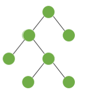
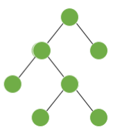

1. El número de vértices de un árbol binario T es impar.
2. Si p es el número de vértices pendientes de un árbol binario T con n vértices. Entonces 𝑝 = ( (𝑛 + 1)/2)

        Â
1. El número de vértices de un árbol binario T es impar.
2. Si p es el número de vértices pendientes de un árbol binario T con n vértices. Entonces 𝑝 = ( (𝑛 + 1)/2)

        Â
Obra publicada con Licencia Creative Commons Reconocimiento Compartir igual 4.0